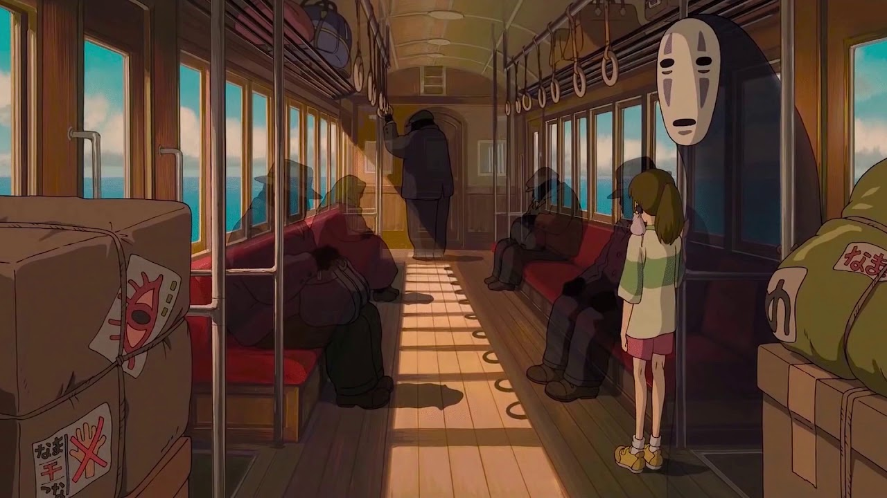
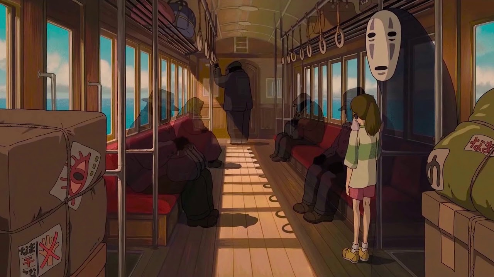

This is a fansite for the Studio Ghibli Film Spirited Away
Spirited Away (Japanese: 千と千尋の神隠し, Hepburn: Sen to Chihiro no Kamikakushi, 'Sen and Chihiro's Spiriting Away') is a 2001 Japanese animated fantasy film written and directed by Hayao Miyazaki, animated by Studio Ghibli for Tokuma Shoten, Nippon Television Network, Dentsu, Buena Vista Home Entertainment, Tohokushinsha Film, and Mitsubishi. Spirited Away tells the story of Chihiro Ogino (Hiiragi), a ten-year-old girl who, while moving to a new neighborhood, enters the world of Kami (spirits of Japanese Shinto folklore). After her parents are turned into pigs by the witch Yubaba (Natsuki), Chihiro takes a job working in Yubaba's bathhouse to find a way to free herself and her parents and return to the human world.
Miyazaki wrote the screenplay after he decided the film would be based on the ten-year-old daughter of his friend Seiji Okuda, the film's associate producer, who came to visit his house each summer.At the time, Miyazaki was developing two personal projects, but they were rejected. With a budget of US$19 million, production of Spirited Away began in 2000.


Ten-year-old Chihiro Ogino and her parents are traveling to their new home when her father decides to take a shortcut. The family's car stops in front of a tunnel leading to what appears to be an abandoned amusement park which Chihiro's father insists on exploring, despite his daughter's protest. They find a seemingly empty restaurant still stocked with food, which Chihiro's parents immediately begin to eat. While exploring further, Chihiro reaches an enormous bathhouse and meets a boy named Haku, who warns her to return across the riverbed before sunset. However, Chihiro discovers too late that her parents have metamorphosed into pigs, and she is unable to cross the now-flooded river.
Haku finds Chihiro and has her ask for a job from the bathhouse's boiler-man, Kamaji. Kamaji refuses to hire her and asks worker Lin to send Chihiro to Yubaba, the witch who runs the bathhouse. Yubaba tries to frighten Chihiro away, but she persists, so Yubaba gives Chihiro a contract to work for her. Yubaba takes away the second kanji of her name, renaming her Sen (千). While visiting her parents' pigpen, Haku gives Sen a goodbye card she had with her, and Sen realizes that she had already forgotten her real name. Haku warns her that Yubaba controls people by taking their names, and that if she forgets hers like he has, she will not be able to leave the spirit world.
Sen faces discrimination from the other workers; only Kamaji and Lin show sympathy for her. While working, she invites a silent creature named No-Face (Kaonashi 顔無し) inside, believing him to be a customer. A "stink spirit" arrives as Sen's first customer, and she discovers he is the spirit of a polluted river. In gratitude for cleaning him, he gives Sen a magic emetic dumpling. Meanwhile, No-Face imitates the gold left behind by the stink spirit and tempts a worker with gold, then swallows him. He demands food and begins tipping extensively. He swallows two more workers when they interfere with his conversation with Sen.
Sen sees paper Shikigami attacking a dragon and recognizes the dragon as Haku metamorphosed. When an injured Haku crashes into Yubaba's penthouse, Sen follows him upstairs. A shikigami that stowed away on her back shapeshifts into Zeniba, Yubaba's twin sister. She turns Yubaba's son, Boh, into a mouse, creates a decoy Boh, and mutates Yubaba's harpy into a tiny, flylike bird. Zeniba tells Sen that Haku has stolen a magic golden seal from her, and warns Sen that it carries a deadly curse. Haku strikes the shikigami, which eliminates Zeniba's hologram. He falls into the boiler room with Sen, Boh, and the harpy on his back, where Sen feeds him part of the dumpling she had intended to give her parents, causing him to vomit both the seal and a black slug, which Sen crushes with her foot.
With Haku unconscious, Sen resolves to return the seal and apologize to Zeniba. Sen confronts No-Face, who is now massive, and feeds him the rest of the dumpling. No-Face follows Sen out of the bathhouse, steadily regurgitating everything that he has eaten. Sen, No-Face, Boh, and the harpy travel to see Zeniba with train tickets given to her by Kamaji. Meanwhile, Yubaba orders that Sen's parents be slaughtered, but Haku reveals that Boh is missing and offers to retrieve him if Yubaba releases Sen and her parents. Yubaba agrees, but only if Sen can pass a final test.
Sen meets with Zeniba, who makes her a magic hairband and reveals that Sen's love for Haku broke her curse and that Yubaba used the black slug to take control over Haku. Haku appears at Zeniba's home in his dragon form and flies Sen, Boh, and the harpy to the bathhouse. No-Face decides to stay behind and become Zeniba's spinner. In mid-flight, Sen recalls falling years ago into the Kohaku River and being washed safely ashore, correctly guessing Haku's real identity as the spirit of the Kohaku River (ニギハヤミ コハクヌシ, Nigihayami Kohakunushi). When they arrive at the bathhouse, Yubaba forces Sen to identify her parents from among a group of pigs in order to break their curse. After she answers correctly that none of the pigs are her parents, her contract disappears and she is given back her real name. Haku takes her to the now-dry riverbed and vows to meet her again. Chihiro crosses the riverbed to her restored parents, who do not remember anything after eating at the restaurant stall. They walk back through the tunnel until they reach their car, now covered in dust and leaves. Before departing, Chihiro looks back at the tunnel.
 

Character English name | Character Japanese (Nihongo) | Actor Japanese | Actor English
Chihiro Ogino / Sen Ogino | Chihiro (荻野 千尋) / Sen (千) | Rumi Hiiragi | Daveigh Chase
Haku / Spirit of the Kohaku River | Haku (ハク) / Nigihayami Kohakunushi (饒速水小白主) | Miyu Irino | Jason Marsden
Yubaba + Zeniba | Yubāba (湯婆婆) + Zenība (銭婆) | Mari Natsuki | Suzanne Pleshette
Kamaji | Kamajī (釜爺) | Bunta Sugawara | David Ogden Stiers
Lin | Rin (リン) | Yoomi Tamai | Susan Egan
Chichiyaku | Chichiyaku (父役) | Tsunehiko Kamijō | Paul Eiding
Aniyaku (assistant Manager) | Aniyaku (兄役) | Takehiko Ono | John Ratzenberger
No-Face | Kaonashi (顔無し) | Akio Nakamura | Bob Bergen
Aogaeru | Aogaeru (青蛙) | Tatsuya Gashūin | Bob Bergen
Bandai-gaeru (foreman) | Bandai-gaeru (番台蛙) | Yō Ōizumi | Rodger Bumpass
Boh (baby) | Bō (坊) | Ryūnosuke Kamiki | Tara Strong
Akio Ogino (Chihiro's father) | Ogino Akio (荻野 明夫) | Takashi Naitō | Michael Chiklis
Yūko Ogino (Chihiro's mother) | Ogino Yūko (荻野 悠子) | Yasuko Sawaguchi | Lauren Holly
River Spirit | Kawa no Kami (河の神) | Koba Hayashi | Jim Ward
Radish Spirit | Oshira-sama (お白様) | Ken Yasuda | Jack Angel

Production of Spirited Away commenced in February 2000 on a budget of ¥1.9 billion (US$15 million). Walt Disney Pictures financed ten percent of the film's production cost for the right of first refusal for American distribution. As with Princess Mononoke, Miyazaki and the Studio Ghibli staff experimented with computer animation. With the use of more computers and programs such as Softimage 3D, the staff learned the software, but used the technology carefully so that it enhanced the story, instead of "stealing the show". Each character was mostly hand-drawn, with Miyazaki working alongside his animators to see they were getting it just right. The biggest difficulty in making the film was to reduce its length. When production began, Miyazaki realized it would be more than three hours long if he made it according to his plot. He had to delete many scenes from the story, and tried to reduce the "eye candy" in the film because he wanted it to be simple. Miyazaki did not want to make the hero a "pretty girl". At the beginning, he was frustrated at how she looked "dull" and thought, "She isn't cute. Isn't there something we can do?" As the film neared the end, however, he was relieved to feel "she will be a charming woman."
A medium shot photograph of a hot spring in the city of Matsuyama on the island of Shikoku, Japan. Dōgo Onsen A wide photograph of a hallway from the Takahashi Korekiyo residence in the Edo-Tokyo Open Air Architectural Museum, which was one of Miyazaki's inspirations in creating the spirit world's buildings. The Takahashi Korekiyo residence in the Edo-Tokyo Open Air Architectural Museum was one of Miyazaki's inspirations in creating the spirit world's buildings.Miyazaki based some of the buildings in the spirit world on the buildings in the real-life Edo-Tokyo Open Air Architectural Museum in Koganei, Tokyo, Japan. He often visited the museum for inspiration while working on the film. Miyazaki had always been interested in the Pseudo-Western style buildings from the Meiji period that were available there. The museum made Miyazaki feel nostalgic, "especially when I stand here alone in the evening, near closing time, and the sun is setting – tears well up in my eyes." Another major inspiration was the Notoya Ryokan (能登谷旅館), a traditional Japanese inn located in Yamagata Prefecture, famous for its exquisite architecture and ornamental features. While some guidebooks and articles claim that the old gold town of Jiufen in Taiwan served as an inspirational model for the film, Miyazaki has denied this. The Dōgo Onsen is also often said to be a key inspiration for the Spirited Away onsen/bathhouse.


Spirited Away has received significant critical success on a broad scale. On review aggregator Rotten Tomatoes, the film holds a 97% approval rating based on 190 reviews, with an average rating of 8.60/10. The website's critics consensus reads, "Spirited Away is a dazzling, enchanting, and gorgeously drawn fairy tale that will leave viewers a little more curious and fascinated by the world around them." Metacritic, which uses a weighted average, assigned the film a score of 96 out of 100 based on 41 critics, indicating "universal acclaim."
In 2004, Cinefantastique listed the film as one of the "10 Essential Animations". In 2005, Spirited Away was ranked by IGN as the 12th-best animated film of all time. The film is also ranked number 9 of the highest-rated movies of all time on Metacritic, being the highest rated traditionally animated film on the site. The film ranked number 10 in Empire magazine's "The 100 Best Films of World Cinema" in 2010. In 2010, Rotten Tomatoes ranked it as the 13th-best animated film on the site, and in 2012 as the 17th. In 2019, the site considered the film to be #1 among 140 essential animated movies to watch. In 2021 the film was ranked at number 46 on Time Out magazine's list of "The 100 Best Movies of All Time".